Each drawing is sampled from the AV with the activation of the corresponding text input injected at <ACT_TOKEN>. NO RL training of faithfulness; this just shows the architecture runs end-to-end.
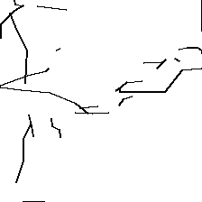
cat (α=0.50)
I am thinking about a cat.
strokes=99, malformed=0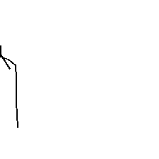
cat_a0.30 (α=0.30)
I am thinking about a cat.
strokes=18, malformed=0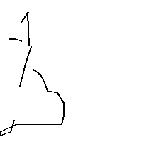
cat_a0.70 (α=0.70)
I am thinking about a cat.
strokes=29, malformed=0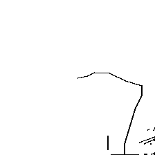
cat_a1.00 (α=1.00)
I am thinking about a cat.
strokes=55, malformed=1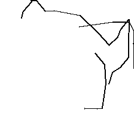
dog (α=0.50)
I am thinking about a dog.
strokes=51, malformed=0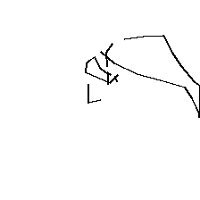
dog_a0.30 (α=0.30)
I am thinking about a dog.
strokes=42, malformed=0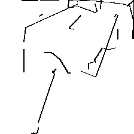
dog_a0.70 (α=0.70)
I am thinking about a dog.
strokes=98, malformed=2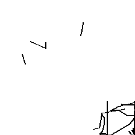
dog_a1.00 (α=1.00)
I am thinking about a dog.
strokes=99, malformed=0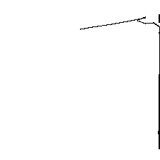
bird (α=0.50)
I am picturing a bird flying across the sky.
strokes=44, malformed=3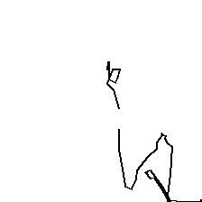
fish (α=0.50)
Imagine a fish.
strokes=48, malformed=0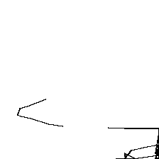
fish_a0.30 (α=0.30)
Imagine a fish.
strokes=56, malformed=1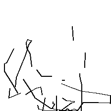
fish_a0.70 (α=0.70)
Imagine a fish.
strokes=99, malformed=1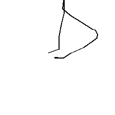
fish_a1.00 (α=1.00)
Imagine a fish.
strokes=21, malformed=5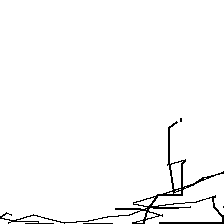
elephant (α=0.50)
I am thinking about an elephant.
strokes=84, malformed=0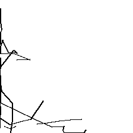
horse (α=0.50)
I am thinking about a horse.
strokes=96, malformed=0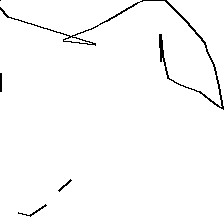
spider (α=0.50)
Imagine a spider on the wall.
strokes=48, malformed=0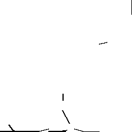
snake (α=0.50)
I am picturing a snake.
strokes=48, malformed=1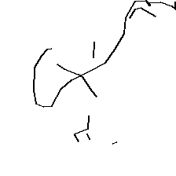
apple (α=0.50)
I am thinking about an apple.
strokes=57, malformed=0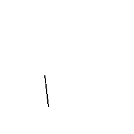
banana (α=0.50)
Imagine a banana.
strokes=6, malformed=6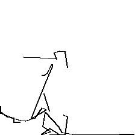
pizza (α=0.50)
I am thinking about a pizza.
strokes=63, malformed=2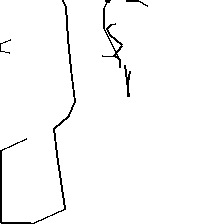
flower (α=0.50)
Imagine a flower in bloom.
strokes=63, malformed=0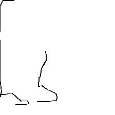
flower_a0.30 (α=0.30)
Imagine a flower in bloom.
strokes=38, malformed=0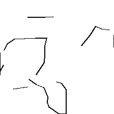
flower_a0.70 (α=0.70)
Imagine a flower in bloom.
strokes=64, malformed=0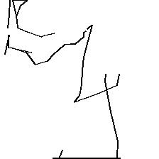
flower_a1.00 (α=1.00)
Imagine a flower in bloom.
strokes=71, malformed=2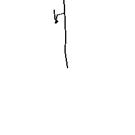
tree (α=0.50)
I am picturing a tree.
strokes=13, malformed=2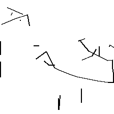
mushroom (α=0.50)
I am thinking about a mushroom.
strokes=81, malformed=3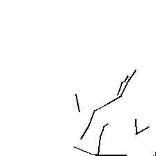
cactus (α=0.50)
I am picturing a cactus in the desert.
strokes=43, malformed=3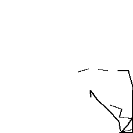
mountain (α=0.50)
I am picturing a mountain.
strokes=56, malformed=0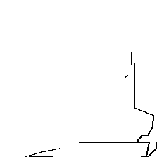
sun (α=0.50)
The sun is shining.
strokes=46, malformed=0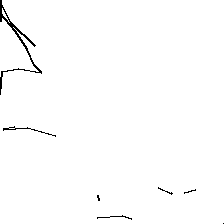
sun_a0.30 (α=0.30)
The sun is shining.
strokes=46, malformed=0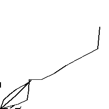
sun_a0.70 (α=0.70)
The sun is shining.
strokes=54, malformed=1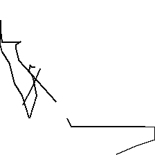
sun_a1.00 (α=1.00)
The sun is shining.
strokes=43, malformed=0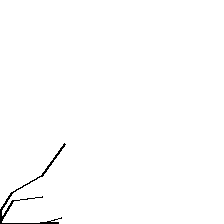
cloud (α=0.50)
I am picturing a cloud in the sky.
strokes=26, malformed=0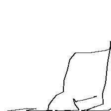
rainbow (α=0.50)
Imagine a rainbow.
strokes=68, malformed=0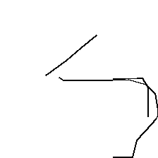
star (α=0.50)
I am picturing a star in the night sky.
strokes=39, malformed=0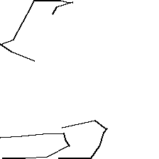
house (α=0.50)
I am picturing a small house with a red roof.
strokes=50, malformed=2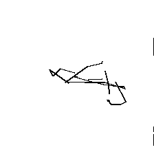
house_a0.30 (α=0.30)
I am picturing a small house with a red roof.
strokes=49, malformed=0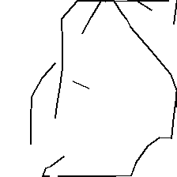
house_a0.70 (α=0.70)
I am picturing a small house with a red roof.
strokes=65, malformed=0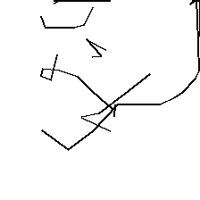
house_a1.00 (α=1.00)
I am picturing a small house with a red roof.
strokes=83, malformed=0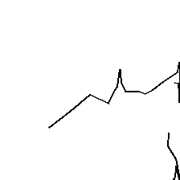
car (α=0.50)
I am thinking about a car.
strokes=46, malformed=6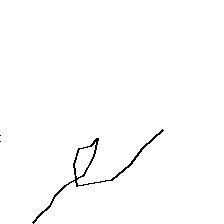
car_a0.30 (α=0.30)
I am thinking about a car.
strokes=28, malformed=0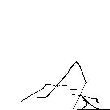
car_a0.70 (α=0.70)
I am thinking about a car.
strokes=52, malformed=2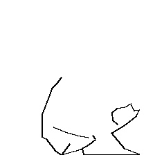
car_a1.00 (α=1.00)
I am thinking about a car.
strokes=42, malformed=0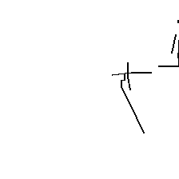
airplane (α=0.50)
I am picturing an airplane.
strokes=45, malformed=0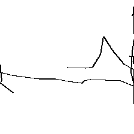
airplane_a0.30 (α=0.30)
I am picturing an airplane.
strokes=59, malformed=0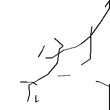
airplane_a0.70 (α=0.70)
I am picturing an airplane.
strokes=79, malformed=0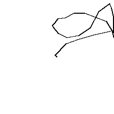
airplane_a1.00 (α=1.00)
I am picturing an airplane.
strokes=34, malformed=0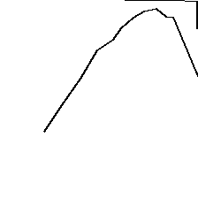
bicycle (α=0.50)
I am thinking about a bicycle.
strokes=28, malformed=0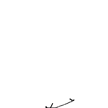
train (α=0.50)
I am picturing a train.
strokes=16, malformed=0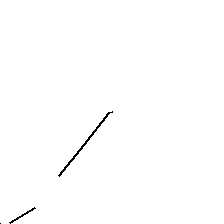
book (α=0.50)
I am thinking about a book.
strokes=15, malformed=0
clock (α=0.50)
I am picturing a clock on the wall.
strokes=47, malformed=4
umbrella (α=0.50)
I am picturing an umbrella.
strokes=44, malformed=0
scissors (α=0.50)
Imagine a pair of scissors.
strokes=23, malformed=0
key (α=0.50)
I am thinking about a key.
strokes=29, malformed=0
eiffel (α=0.50)
Paris, the city of lights, is famous for the Eiffel
strokes=50, malformed=2
capital_france (α=0.50)
The capital of France is
strokes=29, malformed=0
triangle (α=0.50)
Imagine a triangle inscribed in a circle.
strokes=23, malformed=0
smile_face (α=0.50)
I am picturing a smiling face.
strokes=47, malformed=6